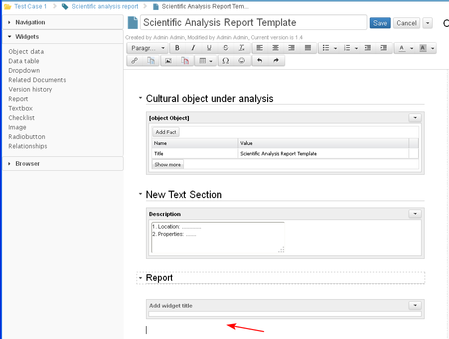

All available widgets in the system are organized in a palette. The palette cannot be removed and is always active when the document is in edit mode. There is an option to minimize the palette.
The user positions the cursor in the section content where a new widget should be placed (1) and selects a widget from the widget palette (2).
When the user positions the widget inside the section, it can be bound to one or more objects.

- The selected widget is inserted automatically into the section content area where the mouse points. This means that there could be text and other widgets above and below the widget.

- If a widget allows typing in text (for example a data table in which we enter data in some of the columns), the text editor is integrated in the widget by default.
- More than one widget of the same type may be inserted in a document (1-2).
When the user is ready with the updates in the document he/ she selects the Save (3) button.

- The system saves the changes.

- The user may insert a widget in the content of a document also by selecting a widget from the palette, drag and drop it in the selected place in the document's content.